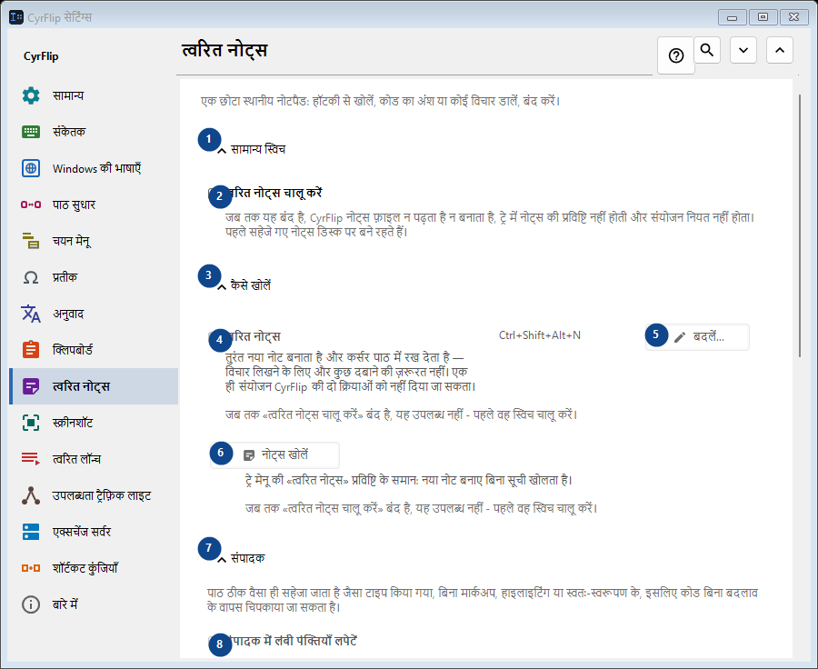
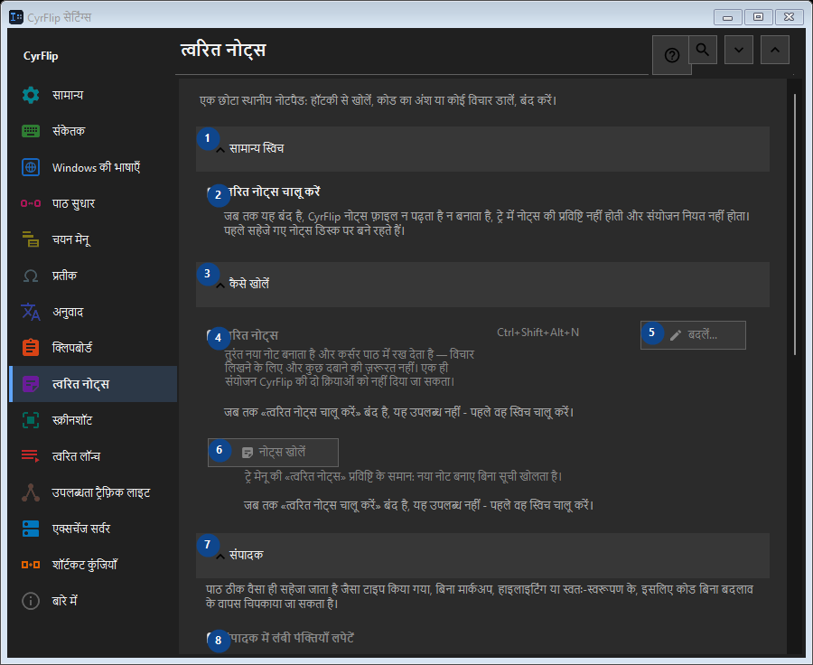

त्वरित नोट्स
इसका उपयोग
एक छोटा स्थानीय नोटपैड: हॉटकी से खोलें, कोड का अंश या कोई विचार डालें, बंद करें।


उपयोग का क्रम
सेटिंग तुरंत लागू होती हैं। कोई अनिवार्य क्रम नहीं है; नीचे दिए समूहों का उपयोग करें।
तत्व
1. सामान्य स्विच
बताई गई कार्रवाई के लिए इस आदेश का उपयोग करें। स्वीकार करने से पहले पुष्टि पढ़ें।
आपके शॉर्टकट2. त्वरित नोट्स चालू करें
जब तक यह बंद है, CyrFlip नोट्स फ़ाइल न पढ़ता है न बनाता है, ट्रे में नोट्स की प्रविष्टि नहीं होती और संयोजन नियत नहीं होता। पहले सहेजे गए नोट्स डिस्क पर बने रहते हैं।
आपके शॉर्टकट3. कैसे खोलें
बताई गई कार्रवाई के लिए इस आदेश का उपयोग करें। स्वीकार करने से पहले पुष्टि पढ़ें।
आपके शॉर्टकट4. त्वरित नोट्स
जब तक «त्वरित नोट्स चालू करें» बंद है, यह उपलब्ध नहीं - पहले वह स्विच चालू करें। यह तत्व अभी उपलब्ध नहीं है। पहले सुविधा चालू करें या कोई प्रविष्टि चुनें।
आपके शॉर्टकट5. बदलें - त्वरित नोट्स
जब तक «त्वरित नोट्स चालू करें» बंद है, यह उपलब्ध नहीं - पहले वह स्विच चालू करें। यह तत्व अभी उपलब्ध नहीं है। पहले सुविधा चालू करें या कोई प्रविष्टि चुनें।
आपके शॉर्टकट6. नोट्स खोलें
जब तक «त्वरित नोट्स चालू करें» बंद है, यह उपलब्ध नहीं - पहले वह स्विच चालू करें। यह तत्व अभी उपलब्ध नहीं है। पहले सुविधा चालू करें या कोई प्रविष्टि चुनें।
आपके शॉर्टकट7. संपादक
बताई गई कार्रवाई के लिए इस आदेश का उपयोग करें। स्वीकार करने से पहले पुष्टि पढ़ें।
आपके शॉर्टकट8. संपादक में लंबी पंक्तियाँ लपेटें
जब तक «त्वरित नोट्स चालू करें» बंद है, यह उपलब्ध नहीं - पहले वह स्विच चालू करें। यह तत्व अभी उपलब्ध नहीं है। पहले सुविधा चालू करें या कोई प्रविष्टि चुनें।
आपके शॉर्टकट9. निर्यात और भंडारण
बताई गई कार्रवाई के लिए इस आदेश का उपयोग करें। स्वीकार करने से पहले पुष्टि पढ़ें।
आपके शॉर्टकट10. निर्यात करते समय तिथियाँ जोड़ें
जब तक «त्वरित नोट्स चालू करें» बंद है, यह उपलब्ध नहीं - पहले वह स्विच चालू करें। यह तत्व अभी उपलब्ध नहीं है। पहले सुविधा चालू करें या कोई प्रविष्टि चुनें।
आपके शॉर्टकट11. सभी नोट्स Markdown में निर्यात करें...
जब तक «त्वरित नोट्स चालू करें» बंद है, यह उपलब्ध नहीं - पहले वह स्विच चालू करें। यह तत्व अभी उपलब्ध नहीं है। पहले सुविधा चालू करें या कोई प्रविष्टि चुनें।
आपके शॉर्टकट12. सभी त्वरित नोट्स हटाएँ
जब तक «त्वरित नोट्स चालू करें» बंद है, यह उपलब्ध नहीं - पहले वह स्विच चालू करें। यह तत्व अभी उपलब्ध नहीं है। पहले सुविधा चालू करें या कोई प्रविष्टि चुनें।
आपके शॉर्टकट13. दूसरे कंप्यूटर पर स्थानांतरण
बताई गई कार्रवाई के लिए इस आदेश का उपयोग करें। स्वीकार करने से पहले पुष्टि पढ़ें।
आपके शॉर्टकट14. निर्यात करें...
आपके नोट्स और चुने गए क्लिपबोर्ड इतिहास वाली एक खुली टेक्स्ट फ़ाइल: इसे किसी भी एडिटर या फ़ोन पर पढ़ा जा सकता है और दूसरे कंप्यूटर पर CyrFlip में आयात किया जा सकता है। फ़ाइल एन्क्रिप्ट नहीं होती। आयात दिखाता है कि क्या जोड़ा जाएगा और कुछ भी नहीं हटाता।
आपके शॉर्टकट15. आयात करें...
बताई गई कार्रवाई के लिए इस आदेश का उपयोग करें। स्वीकार करने से पहले पुष्टि पढ़ें।
आपके शॉर्टकट